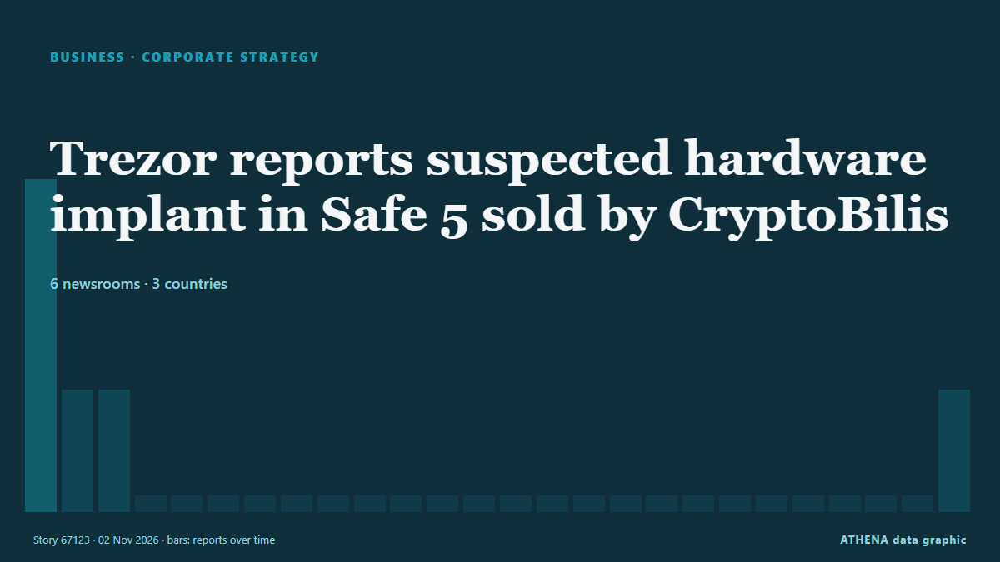

Corporate strategy
SponsoredPresented by  Cybernetics and Artificial Intelligence Lab Welcome to the Cybernetics and Artificial Intelligence Laboratory, established at the Department of Business Administration of the National
Cybernetics and Artificial Intelligence Lab Welcome to the Cybernetics and Artificial Intelligence Laboratory, established at the Department of Business Administration of the National
| 20 Oct | 0 |
|---|---|
| 21 Oct | 0 |
| 22 Oct | 0 |
| 23 Oct | 0 |
| 24 Oct | 0 |
| 25 Oct | 0 |
| 26 Oct | 0 |
| 27 Oct | 0 |
| 28 Oct | 1 |
| 29 Oct | 6 |
| 30 Oct | 6 |
| 31 Oct | 5 |
| 1 Nov | 1 |
| 2 Nov | 5 |

Trezor reports suspected hardware implant in Safe 5 sold by CryptoBilis
Trezor urged CryptoBilis buyers to migrate funds after receiving a credible report of a hardware implant inside a Safe 5 device. from The Block
The Gambia, Zoomlion sign waste management concession agreement
By Alex Adi The Government of The Gambia and Zoomlion Ghana Limited, a subsidiary of the Jospong Group of Companies, have officially signed a landmark concession agreement and broken ground for the… from GBC Ghana Online
Results for Third Quarter Ending 30 September 2026
Wintermar reports a 67.6%YOY jump in Operating Profit to US$24.7million for 9M2026 on 30.0%YOY revenue growth, ... from Antara (English)
Foxconn unveils 3 EVs to grow contract manufacturing business
The MODEL A+, MODEL K+ and MODEL K expand the company's EV portfolio to 12 models. from News of Bahrain
Dr. Fabian Kley Appointed Everllence CFO
The Everllence Supervisory Board has named Dr Fabian Kley as a member of the company’s Executive Board and announced his appointment as Chief Financial Officer (CFO). from Ship.Energy
Kioxia's AI storage boom faces a test as pricing gains moderate, shipments shift
Kioxia's latest results show how AI infrastructure spending is reshaping the NAND flash business, lifting profitability even as consumer demand weakens. from DigiTimes Asia
Oil giant Aramco takes 49% stake in Saudi AI company
Aramco will inject about US$2.6 billion in cash and assets into Humain as the AI firm seeks to expand its capabilities and meet rising demand. from Free Malaysia Today
French MPs vote for a €0.055 tax on every gigabyte sent to users
France’s National Assembly has voted to tax companies for every gigabyte of data they send to French internet users. from The Next Web
Juba City Council lays off 32 staff over tax revenue fraud
JUBA—Juba City Council says it has taken disciplinary action against 32 employees over malpractice in tax revenue collection, after an investigation found that the council was losing about 50 percent… from Sudans Post
MacGregor secures retrofit contract for 35 Wallenius Wilhelmsen vessels
MacGregor has secured a contract to upgrade Programmable Logic Controller (PLC) systems aboard 35 Pure Car and Truck Carrier (PCTC) vessels operated by Wallenius Wilhelmsen. from Container News
Waymo picks Toyota bZ4X as its next robotaxi, starting in Japan in 2027
Waymo is adding the Toyota bZ4X to its robotaxi lineup. from Electrek
Environmental defenders testify about attacks in Latin America linked to Canadian mining companies
The Inter-American Commission on Human Rights heard testimony Oct. from Mongabay
Apple overtakes Nvidia to become world's most valuable company at $5.03 trn
According to a report by Bloomberg, Apple’s market capitalization stood at $5.03 trillion on Friday. from TASS (English)
South Africa’s Absa opens first Gulf office in Dubai to tap $158bn UAE-Africa trade boom
The office will connect Gulf-based companies, investors and financial institutions with Absa’s operations across 16 African markets. from Arabian Business
Shops to stay open across Slovakia on 1 November
Kaufland, Tesco, Lidl and other major chains have confirmed they will open on All Saints’ Day. from The Slovak Spectator
Lynas locks in price floors as revenue jumps 55%
Lynas is using dysprosium and terbium supplies to help secure longer-term relationships with magnet makers. from MINING.COM
Villa Vie Odyssey stranding puts Cambodia back in global headlines
The stranding of the Villa Vie Odyssey amid soaring fuel costs has again drawn global media attention to Cambodia after the MS Westerdam’s arrival during the Covid-19 pandemic and highlighted… from Khmer Times
Russia’s Rusal plans to mine bauxite in Ghana – RIA
Russian aluminium giant Rusal plans to establish a joint venture in Ghana to mine and process bauxite, the raw material used to produce aluminium, Russia's RIA state news agency reported, citing a… from MyJoyOnline
Marcos urges Sazgar to source more Philippine-made parts
New Biñan plant designed to assemble 12,000 three-wheelers annually. from Daily Tribune